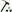

Li’angahuo ’a Maui
Useful Information
| Location: | At the southern tip of ’Eua, 'Eua island, Tonga |
| Open: |
No restrictions. [2011] |
| Fee: |
free. [2011] |
| Classification: | Natural Bridge |
| Light: | n/a |
| Dimension: | |
| Guided tours: | |
| Photography: | |
| Accessibility: | |
| Bibliography: | |
| Address: | |
| As far as we know this information was accurate when it was published (see years in brackets), but may have changed since then. Please check rates and details directly with the companies in question if you need more recent info. |
|
History
Description
Li’anga Huo A Maui is a natural bridge, which was formed by the collapse of a cave. The coral limestone form a steep cliff, af the foot of the cliff the destruction by the waves created a huge sea cave, probably at the place where a small karst cave had been before, and the rock was more easily destroyed. After some time, when the cave became bigger, the rear part of the chamber collapsed forming a huge collapse doline. The remaining part of the cave ceiling now forms a bridge, which is massive enough to walk across. The dirt road along the cliff edge crosses the bridge. It is a populat walking trail.
The name is explained by a legend. Maui is a Polynesian demi god well known all over the South Pacific. One day he was sleeping in the middle of the island of ’Eua, when his mother woke him up to hoe the kava plantation. He was very tired so he was angry about the disturbance and the chore. He was hoeing so angrily that he started an earthquake. When his mother became aware of all the damage he was causing to the island she stopped him. She grabbed the hoe from Maui’s hand and threw to the south where it pierced the rim of island. When Maui then pulled out the hoe from the rock a hole in the cliff face remained, which was called Li’anga Huo A Maui (Limestone Arch of Maui).
- See also
 Search DuckDuckGo for "Li’angahuo ’a Maui"
Search DuckDuckGo for "Li’angahuo ’a Maui" Google Earth Placemark
Google Earth Placemark Li’anga Huo A Maui (Eua’s Natural Archway) (visited: 10-JUN-2012)
Li’anga Huo A Maui (Eua’s Natural Archway) (visited: 10-JUN-2012)- Sights of Southern Eua, Tonga, South Pacific (visited: 10-JUN-2012)
- The Arch (visited: 10-JUN-2012)
- Eua Map, Kingdom of Tonga, South Pacific Islands (visited: 10-JUN-2012)
 Index
Index Topics
Topics Hierarchical
Hierarchical Countries
Countries Maps
Maps